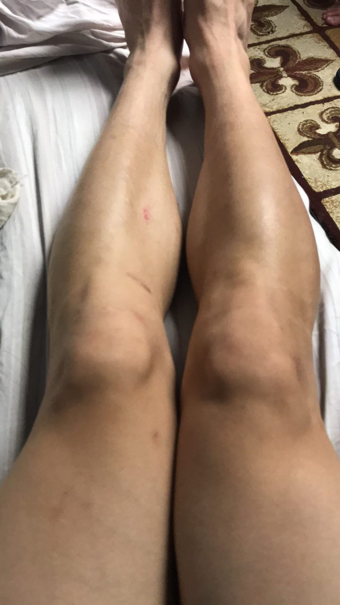

Day 0
My History
I have already torn both ACLs (2015, 2016)
Another knee surgery in 3/2017 to clean up my meniscus...
AND NOW THIS??? 😩😢😭🤕
The Deets
02/14/18 22:00 Bad cut while playing pickup basketball
I felt the shooting pain right away. Limited weight bearing as well
02/15/18 00:42 Thursday Morning...
Potentially tore my ACL.. AGAIN...
Cancelled my flight to Linger Conference (I need Jesus more than ever right now) and going straight home.
T-5 hours until I leave for the airport...
HOW IN THE WORLD DID I GET HERE???
Previously that day...
Just saw Riley Lachance hit a buzzer beater 3 for Vanderbilt Basketball to get the W vs MSS.
Got to see Zach Hamer, Damian, Djery
It was all good...
Then I decided to go play basketball...
Why do you do this to yourself...
Playing pickup basketball is never a good idea. And I was "trying" a little too hard.
Current status:

Heroes (not all superheroes wear capes):
- Patty J, Bo Kim, Isaiah Salazar for loving me in the face of my adversity; for literally carrying me from the gym to the car and to towers.
- Djery for providing me with food and shelter last night
- Aron, Fletcher, Robby, Matt Bedard, Jake Steins, Faith Noah, Chris Romanoski, Peter Kim, Matt Sentilles, and the whole UCAT / Fratican community for helping me get ice, helping me get into the shower, and loving me as I attempted to do anything.
- Logan Guy (Obama) and Parker Ragle (Biden) for supporting me through this time of adversity
- My parents for having to see me injured once again.
- The lovely lady, who works for American Airlines customer service, who helped me fly directly home tomorrow without having to pay an arm and a leg. God Bless your sweet soul Rachel.
- SARA MELBY... Athletic trainer and superwoman. What an incredibly kind human. For responding to my text and advising me how to proceed. I don't know how I'll ever thank you.
🙏 Prayer Requests:
- Supernatural healing in my knee
- I can still serve in Guatemala in some capacity despite my injury
- I never play basketball again...
- I was praying to God that I would find a way to leave my comfort zone... so now I'm REALLY uncomfortable.
- Peace, Gratitude, Trust in the Lord because Romans 8:28
NaNundefinedAnd we know that in all things God works for the good of those who love him, who have been called according to his purpose. - My parents, for having to see me injured once again.